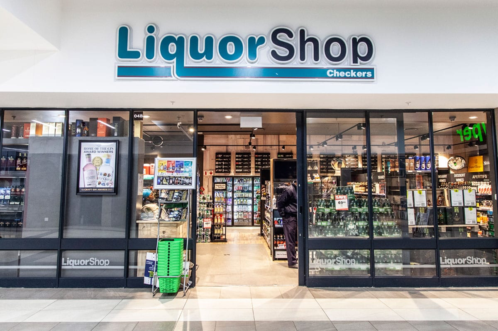
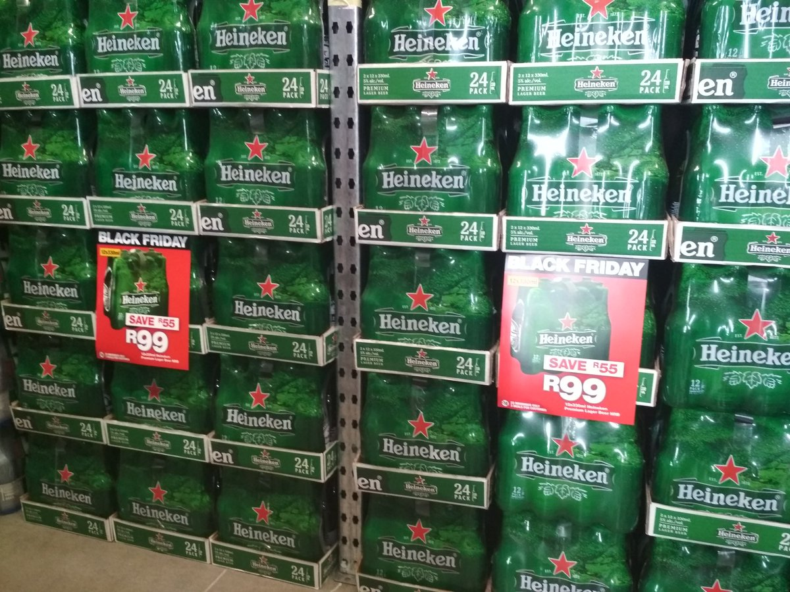
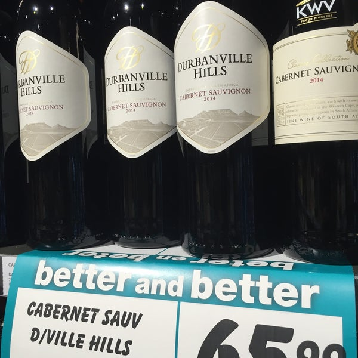

Better and better; this is what we strive for on behalf of the millions of customers who’ve made Checkers a household name since 1956. But what does it really mean to be “better and better”? Well, our track record for pushing boundaries can be traced back to the opening of our maiden store in Mayfair, Johannesburg. As it turned out, that first, humble 38 square metre outlet would become the incubator for many groundbreaking ideas for the then fledgling supermarket.
Today, backed by the biggest food retail group in Africa, we’re able to tap into a wealth of resources that further fuel our innovative spirit and drive to be better and better. The Shoprite Checkers family’s collective mission is to bring products and services to market that delight in both quality and price, and we’re able to do that thanks to a shared commitment to our customers.
  